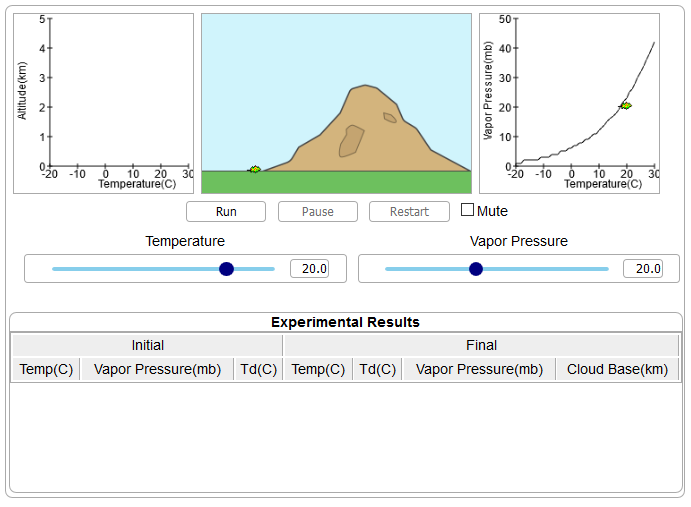
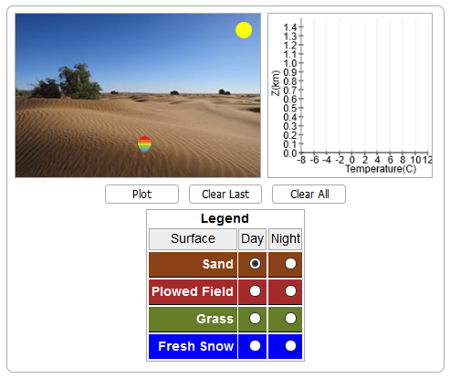
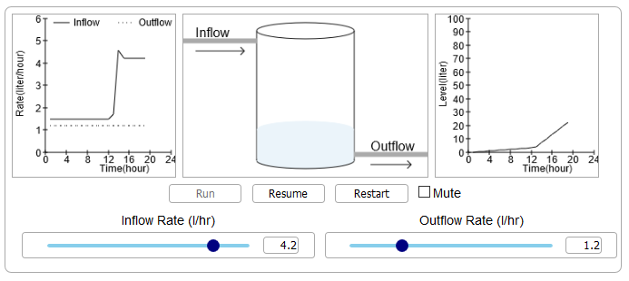

You can use the following simulations to demostrate the concepts of energy budgets, albedo and adiabatic processes. The simulations are freely available. Each simulation is written in HTML5 and Javascript and will in most modern browsers.
Concept: Adiabatic processes. A leaf symbolizes a parcel of air rising over a mountain. Graphs display the information as the leaf rises and falls. Users vary the beginning temperature and vapor-pressure of the leaf.
 DemoConcept: Differences of thermal exchange among four types of ground surfaces. Users chose a land type and compare the results side-by-side in a graph.
 DemoConcept: Energy intake of our atmosphere during the day and the loss of energy at night. Users vary the intensity of the sun during the day. A tub of water fills up symbolically showing the energy intake of our atmosphere.
 DemoYarger, D. N., J. Peter Boysen, and Rex Thomas, Iowa State University and Mary R. Marlino, Univ. Corporation for Atmospheric Research, 1998: Developing And Implementing A Constructivist Learning Environment: Translating Theory Into Practice, 10th World Conference on Educational Multimedia and Hypermedia and World Conference on Educational Telecommunications, Freiburg, Germany, June 20-25, 1998. ED MEDIA-TELCOM 1998 CD, 2116-2119.
Hsu, Ying-Shao, John Peter Boysen, Douglas N. Yarger, Iowa State University and Chi-Chuan Chen, AGRIS corporation, 1998: The development of an exploratory simulation for constructivist learning - An example of Java application, USAWebNet 98--World Conference of the WWW, Internet and lntranet, Orlando, FL, USA, November 7-12, 1998. WEBNET 1998 CD, 1090-1092.
Hsu, Ying-Shao, John Peter Boysen, Douglas N. Yarger, Iowa State University and Chi-Chuan Chen, AGRIS corporation, 1998: Development and formative evaluation of an instructional simulation for a web-aided meteorology course, USAWebNet 98--World Conference of the WWW, Internet and lntranet, Orlando, FL, USA, November 7-12, 1998. WEBNET 1998 CD, 1290-1293.